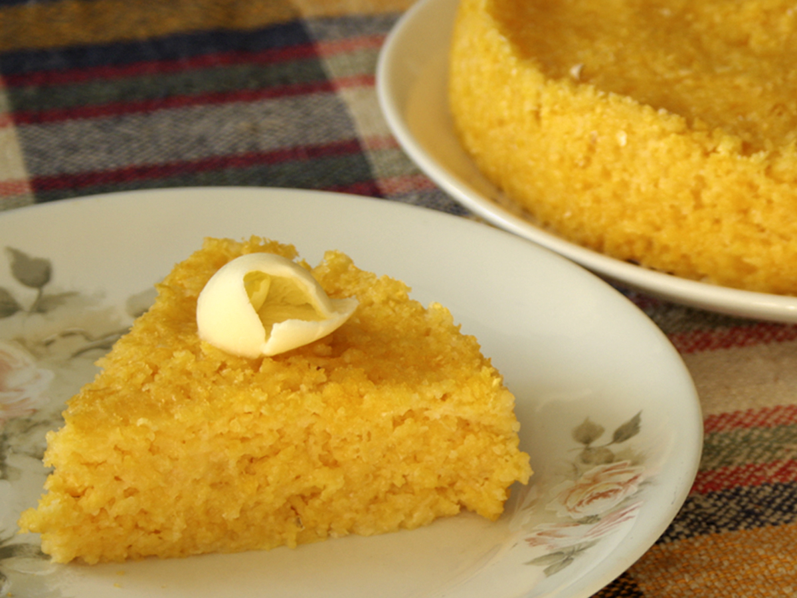

Cuscuz Nordestino

CUSCUZ NORDESTINO (BRAZILIAN COUSCOUS FROM THE NORTHEAST REGION)
The Brazilian Couscous from the Northeast Region also known as Corn Couscous is a nutritious, cheap and a really simple recipe to make.
It is a North African dish brought to Brazil by Portuguese colonizers.
It is a steamed corn meal recipe, and it will look like a cake, if you use a steamer basket. If you don't have a steamer you can cook
it on a deep plate (“cuscuz no prato”).
It is an essential part of the typical Brazilian northeastern breakfast, and is served almost at every meal – in some places it is also
used as an alternative for bread.
The Coconut Couscous is the sweet version of this recipe, enriched with coconut and sugar. There are also other regional versions like
Portuguese Couscous and Tapioca Couscous, but they are very different dishes.
Ingredients
- 250 g pre cooked flaked corn flour or pre cooked corn flour
- 1 teaspoon salt
- 1 tablespoon manioc starch
- 400 ml water, approximately
Preparation method
- Mix the corn flour, manioc starch and salt, together, in a bowl.
- Gradually add the water and mix well until all ingredients are moist and mixture has a crumbly texture. Let it stand for 10 minutes.
Manioc starch makes the couscous more compact, but you can also prepare the recipe without it.
- Fill the steamer pot half full of water.
- Place the couscous mixture into the steamer basket and gently level the top without pressing. The mixture should remain soft to allow
the steam to penetrate just right.
- Cover and cook over low heat for about 15 minutes, until it begins to release its aroma. At this point the mixture starts to pull away
from the sides of the steamer.
- Cut into slices and serve hot. Add butter, molasses, coconut milk or milk (hot or cold, sweetened or unsweetened), if you like. It is
a very versatile side dish to vegetables, meat, fish, eggs, cheese, coconut and sweet courses.